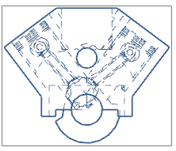
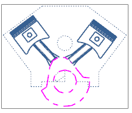

预计完成此练习需要：9–14 分钟
在这个练习中，您的目标是阐明发动机缸体内部的部件，以便可以在视图中清晰地看到活塞以及连杆，如果您只是简单地将隐藏线显示更改为一种可见线型，结果并不是最理想的。

这是因为视图的隐藏线设置将统一应用到视图中的所有组件，您可能需要进行大量与视图相关的编辑来清理视图。为了获得更满意的结果，您可以将选定的组件组合为渲染集，并对它们指派独一无二的隐藏线与可见线显示属性。当您将渲染集添加到视图中，并调整它们的外观顺序时，您可以生成一个视图，它看起与如图所示类似。

开始 创建并编辑渲染集